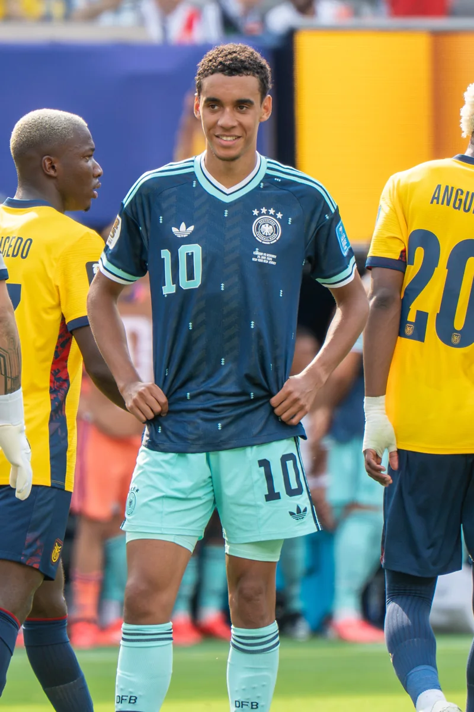

ARENA EXPLORER / VISUAL CREDITS
影像与字体来源
照片为球员和球场的真实影像。本网站是非官方球迷作品，照片不表示球员、俱乐部或摄影师对本项目的赞助或认可。
Harry Kane / 哈里·凯恩
2025年1月6日，萨尔茨堡与拜仁慕尼黑友谊赛。照片中为拜仁黑色热身服。
摄影：Werner100359 / Wikimedia Commons。原始文件与授权记录 · CC BY-SA 4.0。
处理：缩小尺寸并转为 WebP，页面中使用 CSS 裁切、叠加渐变和颜色调整。照片及其衍生展示依 CC BY-SA 4.0 授权。_28.jpg){kind=link}

Jamal Musiala / 穆西亚拉
2026年6月25日，厄瓜多尔对德国。照片中为德国队10号球衣，非拜仁训练服。
摄影署名：Bryan Berlin / WikiPortraits / Wikimedia Commons。原始文件与授权记录 · CC BY-SA 4.0。
处理：缩小尺寸并转为 WebP，页面中使用 CSS 裁切、渐变和颜色调整。照片及其衍生展示依 CC BY-SA 4.0 授权。
球员模型贴图
面部贴图使用 Bryan Berlin / WikiPortraits 的照片，在 MakeHuman 原有贴图上重新定位、调整颜色并合成。凯恩照片 · 穆西亚拉照片。
.jpg){kind=link}


体验入口照片
球场训练 · Aleksandar Pavlović，2026年1月6日萨尔茨堡友谊赛。Werner100359 摄。原始文件 · CC BY-SA 4.0。
_34.jpg){kind=link}
好友联机 · 同场友谊赛，拜仁球员相抱。Werner100359 摄。原始文件 · CC BY-SA 4.0。
_37.jpg){kind=link}
自由参观 · 安联球场夜景。Richard Bartz (Makro Freak) 摄。原始文件 · CC BY-SA 2.5。
照片来自 Wikimedia Commons。照片经缩放并转为 WebP，联机照片经过裁切，通道照片调整了方向。页面还使用 CSS 裁切、渐变和颜色调整。

字体 / Typography
Arena Sans SC：由 Noto Sans SC 按本项目界面字集制作的子集，保留中文正文与标题两种字重。上游版权归 Noto Project / Adobe / Google 对应作者，完整版权声明与 SIL Open Font License 1.1 随项目附带。上游来源。
Arena Condensed：由 Barlow Condensed SemiBold 制作，用于英文标题和数字。Copyright 2017 The Barlow Project Authors。SIL Open Font License 1.1 · 上游来源。
字体由本站提供，无需连接外部字体服务。照片、字体与应用代码各自遵循相应许可证；应用代码的 MIT 许可证不会替代素材授权。